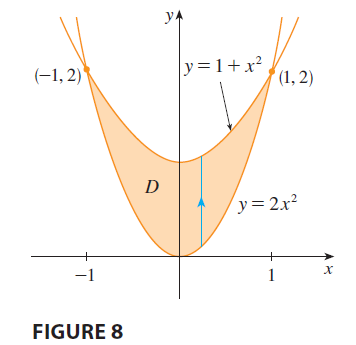

EXAMPLE 1 Evaluate \(\iint_D (x + 2y) dA\), where \(D\) is the region bounded by the parabolas \(y = 2x^2\) and \(y = 1 + x^2\).

SOLUTION The parabolas intersect when \(2x^2 = 1 + x^2\), that is, \(x^2 = 1\), so \(x = \pm 1\). We note that the region \(D\), sketched in Figure 8, is a type I region but not a type II region and we can write \[ D = \{(x, y) | -1 \le x \le 1, 2x^2 \le y \le 1 + x^2\} \] Since the lower boundary is \(y = 2x^2\) and the upper boundary is \(y = 1 + x^2\), Equation 3 gives \[ \iint_D (x + 2y) dA = \int_{-1}^1 \int_{2x^2}^{1+x^2} (x + 2y) dy dx \] \[ = \int_{-1}^1 [xy + y^2]_{y=2x^2}^{y=1+x^2} dx \] \[ = \int_{-1}^1 [x(1+x^2) + (1+x^2)^2 - x(2x^2) - (2x^2)^2] dx \] \[ = \int_{-1}^1 (-3x^4 - x^3 + 2x^2 + x + 1) dx \] \[ = \left[ -3\frac{x^5}{5} - \frac{x^4}{4} + 2\frac{x^3}{3} + \frac{x^2}{2} + x \right]_{-1}^1 = \frac{32}{15} \]
NOTE When we set up a double integral as in Example 1, it is essential to draw a diagram. Often it is helpful to draw a vertical arrow as in Figure 8. Then the limits of integration for the inner integral can be read from the diagram as follows: The arrow starts at the lower boundary \(y = g_1(x)\), which gives the lower limit in the integral, and the arrow ends at the upper boundary \(y = g_2(x)\), which gives the upper limit of integration. For a type II region the arrow is drawn horizontally from the left boundary to the right boundary.